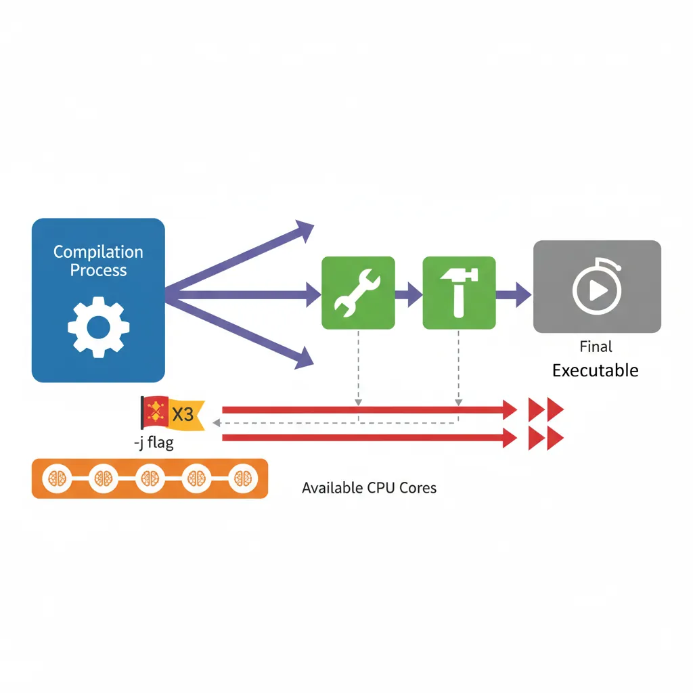
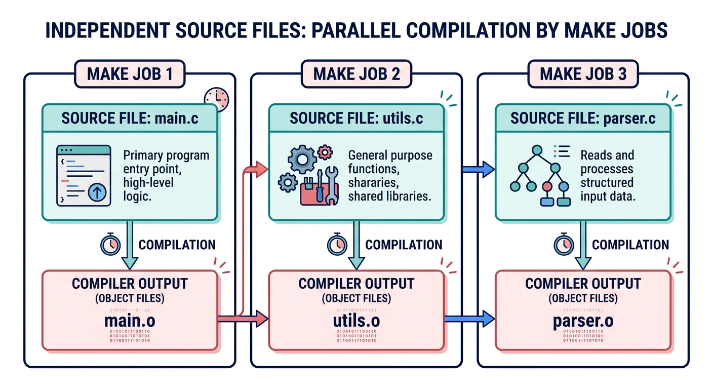
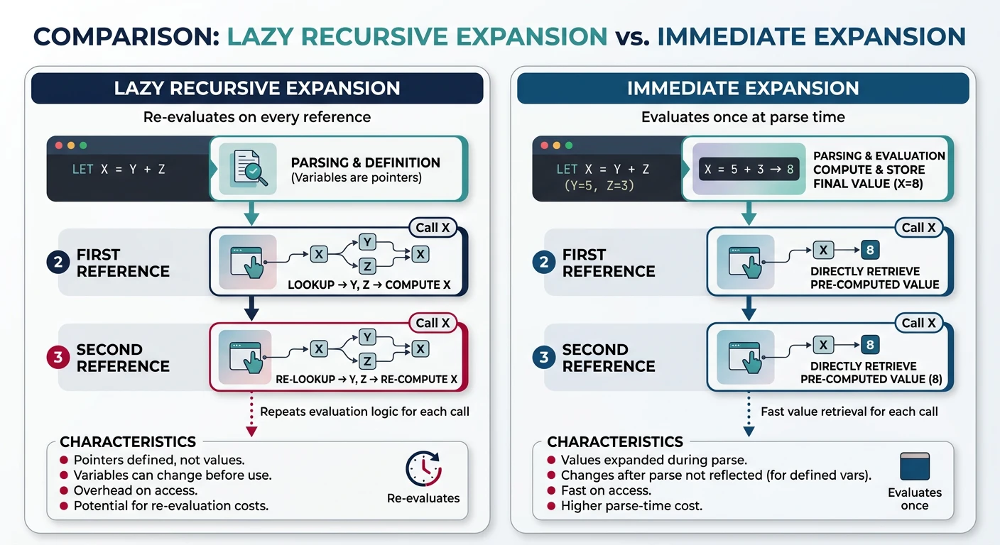
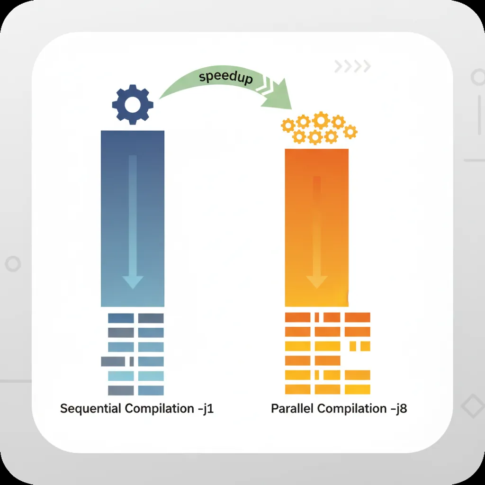

We use cookies to enhance your browsing experience, serve personalized content, and analyze our traffic. By clicking "Accept All", you consent to our use of cookies. See our Privacy Policy for more information.
GNU Make Mastery Part 11: Parallel Builds & Performance
February 27, 2026Wasil Zafar18 min read
Cut build times dramatically with make -j$(nproc): understand the jobserver token protocol that safely coordinates sub-makes, use order-only prerequisites and .NOTPARALLEL to fix race conditions, and apply lazy vs immediate expansion for Makefile loading performance.
Part 11 of 16 — GNU Make Mastery Series. A project with 200 source files compiled serially might take 60 seconds. With make -j8 on an 8-core machine, the same build can finish in under 10 seconds. Parallelism in Make is powerful — but it exposes hidden dependency bugs that serial builds silently tolerate.
make -j4 # run at most 4 jobs simultaneously
make -j # unlimited jobs (usually bad — can starve system)
make -j$(nproc) # set jobs = number of logical CPU cores (recommended)

Parallel builds distribute independent compilation jobs across available CPU cores using the -j flag
Auto-detect CPU Count in Makefile
# Detect CPU count portably (Linux nproc, macOS sysctl)
NPROC := $(shell nproc 2>/dev/null || sysctl -n hw.ncpu 2>/dev/null || echo 4)
# Offer a convenience target:
.PHONY: fast
fast:
$(MAKE) -j$(NPROC) all
Sample Source Files
Self-contained examples: Parallel-build examples compile main.c, utils.c, and parser.c simultaneously. Each translation unit is independent, making them ideal for demonstrating -j speed-ups.

Independent translation units (main.c, utils.c, parser.c) can be compiled simultaneously by parallel make jobs
When you run make -j8, Make creates a pipe (the jobserver) pre-loaded with 7 tokens (one job slot is kept by the top-level Make itself). Each time Make wants to run a recipe in parallel, it reads one token from the pipe. When the recipe finishes, it writes the token back. This ensures the total number of running jobs never exceeds -j.
Sub-makes Must Use $(MAKE)
# WRONG — spawns a new make with its own -j limit, ignores jobserver:
subdir:
make -C subdir # do NOT use bare 'make'
# CORRECT — child inherits parent's jobserver:
subdir:
$(MAKE) -C subdir
Warning: If a recipe calls $(MAKE) but the parent didn't pass -j, the child still runs serially. The jobserver is only active when the top-level make was started with -j N.
Race Conditions
Detecting Races
A race condition occurs when two parallel jobs read from or write to the same file — or when a job starts before a prerequisite it needs has been built. Races are non-deterministic: the build may succeed on one run and fail on the next.
Race conditions occur when parallel jobs access the same resource without proper dependency ordering
# Run multiple times to expose flaky races:
for i in $(seq 1 10); do make clean && make -j$(nproc) || echo "FAILED on run $i"; done
# Use --shuffle (GNU Make 4.4+) to randomize build order and expose hidden deps:
make -j8 --shuffle
Fixing with Order-Only Prerequisites
# Problem: two rules write to build/ simultaneously before mkdir runs
$(BUILDDIR)/%.o: src/%.c
$(CC) $(CFLAGS) -c $< -o $@ # fails if build/ doesn't exist yet
# Fix with order-only prerequisite (| separator):
# build/ is created before the rule, but its timestamp doesn't trigger rebuilds
$(BUILDDIR)/%.o: src/%.c | $(BUILDDIR)
$(CC) $(CFLAGS) -MMD -MP -c $< -o $@
$(BUILDDIR):
mkdir -p $@
# Race: generated header used before it's produced
$(BUILDDIR)/parser.o: src/parser.c | $(BUILDDIR)/grammar.h
$(CC) $(CFLAGS) -c $< -o $@
$(BUILDDIR)/grammar.h: grammar.y
bison --defines=$@ $<
.NOTPARALLEL and .WAIT
# Force serial execution of a specific target's prerequisites:
.NOTPARALLEL: generate-code
# GNU Make 4.4+: .WAIT inserts a sync point within a prerequisite list:
all: compile-stage .WAIT link-stage
# Force entire Makefile to be serial (last resort — kills all speedup):
.NOTPARALLEL:
Lazy vs Immediate Expansion
Recursive (=) variables are re-evaluated every time they're referenced. In large Makefiles with hundreds of $(shell ...) calls, this can add seconds of overhead.

Lazy (=) variables expand on every reference causing repeated shell calls, while immediate (:=) variables expand once at parse time
# BAD — $(shell find ...) called EVERY time $(SRCS) is expanded:
SRCS = $(shell find src -name '*.c')
# GOOD — evaluated once at parse time with :=
SRCS := $(shell find src -name '*.c')
# VERY BAD in a rule — wildcard called in a recipe (correct place is makefile body):
%.o: %.c
$(CC) $(shell pkg-config --cflags gtk+-3.0) -c $< -o $@ # re-runs pkg-config for every .o!
# GOOD — evaluate pkg-config once at parse time:
GTK_CFLAGS := $(shell pkg-config --cflags gtk+-3.0)
GTK_LIBS := $(shell pkg-config --libs gtk+-3.0)
%.o: %.c
$(CC) $(CFLAGS) $(GTK_CFLAGS) -c $< -o $@
Profiling & Time Tracking
# Overall build time:
time make -j$(nproc)
# Per-recipe timing with make --trace (GNU Make 4.0+):
make --trace 2>&1 | head -60
# Use remake (enhanced make with profiling):
remake --profile # writes profile to profile.json
# Ninja-style timing output (requires a wrapper):
# Set SHELL to a timing wrapper:
SHELL = /bin/bash
# Then add "time" prefix to expensive rules for spot checks

Build time comparison showing dramatic speedup from sequential (-j1) to parallel (-j8) compilation
Try It — Parallel vs Sequential
Create a small project and compare -j1 (sequential) with -j$(nproc) (parallel) build times:
mkdir -p src
# Create 4 independent source files
for f in main utils parser network; do
cat > src/$f.c << EOF
#include <stdio.h>
void ${f}_init(void) { printf("$f ready\n"); }
EOF
done
# Add main() to main.c
cat > src/main.c << 'EOF'
#include <stdio.h>
extern void utils_init(void);
extern void parser_init(void);
extern void network_init(void);
int main(void) {
utils_init(); parser_init(); network_init();
printf("All modules loaded\n");
return 0;
}
EOF
# Write a parallel-safe Makefile
cat > Makefile << 'EOF'
CC := gcc
CFLAGS := -Wall -Wextra -O2
SRCS := $(wildcard src/*.c)
OBJS := $(SRCS:.c=.o)
TARGET := myapp
.PHONY: all clean info
all: $(TARGET)
$(TARGET): $(OBJS)
$(CC) -o $@ $^
src/%.o: src/%.c
$(CC) $(CFLAGS) -c $< -o $@
clean:
rm -f $(OBJS) $(TARGET)
info:
@echo "CC = $(CC)"
@echo "CFLAGS = $(CFLAGS)"
@echo "SRCS = $(SRCS)"
@echo "OBJS = $(OBJS)"
EOF
# Compare build times
make info
time make -j1 # sequential
make clean
time make -j$(nproc) # parallel
make clean
Rule of thumb: Always use := for variables computed from $(shell ...), $(wildcard ...), and $(patsubst ...) in large projects. Use = only when you explicitly need lazy re-evaluation, such as target-specific variable forwarding.
Next in the Series
In Part 12: Testing, Coverage & Debug Tooling, we add test targets, integrate gcov/lcov code coverage, and wire in AddressSanitizer, UBSan, and ThreadSanitizer so quality tooling is a first-class citizen of the build system.
Continue the Series
Part 12: Testing, Coverage & Debug Tooling
Add test targets, gcov/lcov HTML reports, and sanitizer builds (ASan/UBSan/TSan) to your Makefile.